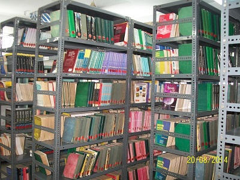

The Central Library and Information Centre is spread across an area of 404.23 sq m and has a rich collection of Books along with Print Journals ,Technical Magazines and Periodicals. The e-journals of the Central Library can be accessed throughout the campus as it is IP based.
The Central Library functions from 9.00 A.M to 8.00 P.M on Weekdays and on Saturdays from 10.00.am to 3.00 P.M . Reprographic facilities like photocopying and scanning of documents are also available in the Library.
Students can borrow 03 books against their library cards and 04 books as selected by them for the whole Semester. Apart from the Central Library each Department has its own departmental library. The Central Library has a collection of 28,948 Volume of Books including Reference & Textbooks for the users. Periodicals , Journals and Magazines , e-journals and e-books are also available.